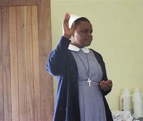

Head Master and Chaplen
Rev. Lymo he graduated high school in Bwiru high school, and joined Makumira universty
where he studied theology of how to be Pastor, in which he is a good leader of our school
who made great changes as to be able to finish the constuction of the school Church.
He also teaches Bible Knowldge, Divinity and history.
Mr. Munuo
Second head master
He is the second head master, he graduated his primary level in Moshi primary school
and in secondary level in Agape seminary. He studied university of Dodoma where he graduated as
the best teacher of biology and chemisrty.He teaches biology and chemistry subjects."

Sister Magdaline
Discipline
She is the discipline mistress, who make sure all students have good discipline
and also taakes care all students discipline cases. she graduated primary level in
Feza primary school and her secondary level in Feza high school. the studied bachelor in education
in University of Dar es salaam. She teaches Kiswahili and Civics subjects.
Mr. Richard
Food and Sports
He is takes care in two sectors which are Food sector as to make sure everyday there is no problem
in food from kitchen to students also to staff. In sport sector as to make sure all students do their
physical exercise, even forming the challenging matches between classes or staffs. He garduated his primary level
in Makongo primary school and his seconndary level in Moshi tech high school. He graduated his first degree in
University of Dar es salaam in bachelor in education.
Mrs. Vivian
Burser/ Accountant
She is finished her primary level in St.Anne primary school and her secondary level in St.Anne girls high school.
She graduated her Masters in Accountant in University of Dodoma. She has a duty to provide the pocket money
students every month, and the fees of every student to collect them.
.jpg)